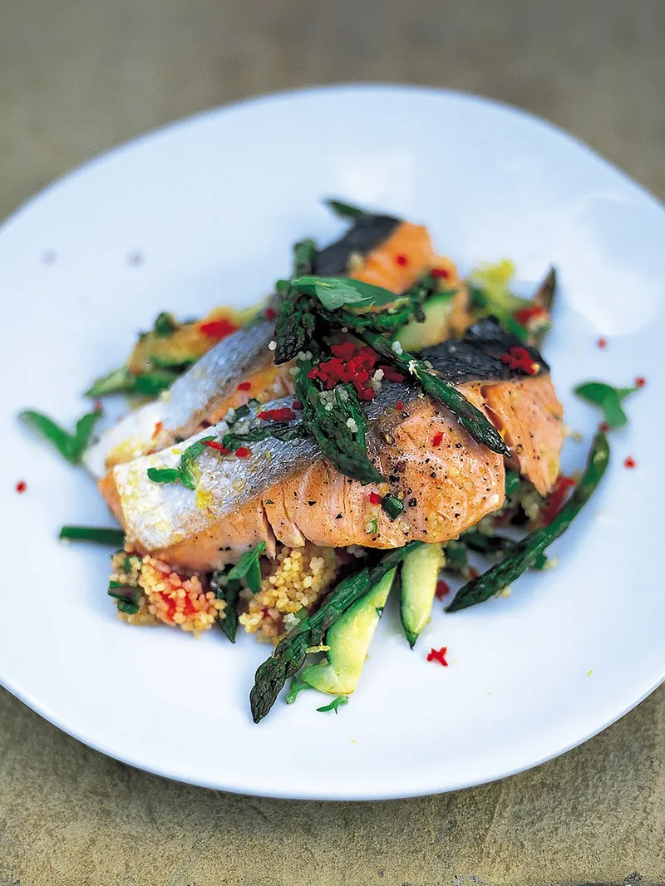

Salmon & couscous
With chilli, courgette & aspargus
This super-fresh salmon and couscous salad is a tasty, wholesome and quick dinner.
Ingredients
- 75 g couscous
- 1 small courgette
- 1 handful of asparagus
- 1 fresh red chilli
- 2 ripe tomatoes
- a few springs of fresh coriander
- 1 x 120 g salmon fillet , skin on, scaled, pin-boned, from sustainable sources
- extra virgin olive oil
- ½ a lemon
- 1 tablespoon fat-free natural yoghurt
Method
- Pop the couscous into a bowl, just cover with boiling water, put a plate on top and leave for 10 minutes to do its thing.
- Slice the courgette into batons, snap the woody ends from the asparagus and deseed and finely chop the chilli.
- Roughly chop the tomatoes, then pick and roughly chop the coriander leaves, discarding the stalks.
- Slice the salmon into finger-sized strips, drizzle with olive oil, then season with pepper and a small pinch of sea salt.
- Heat a small non-stick frying pan over a medium heat, add the salmon, then scatter over the courgette and chilli. Cook for 2 minutes, turning the salmon halfway.
- Stir the tomatoes, lemon juice, 1 tablespoon of oil and the chopped coriander into the couscous, then season to taste with salt and black pepper.
- Carefully remove the salmon strips to a plate, then add the couscous to the veg left in the pan. Toss and mix together, then place the salmon strips on top of the couscous. Cover with a lid or some tin foil and place back on a high heat for 1 final minute, or until the fish is beautifully cooked.
- To serve, slide everything onto a plate, spoon over the yoghurt, then tuck in.